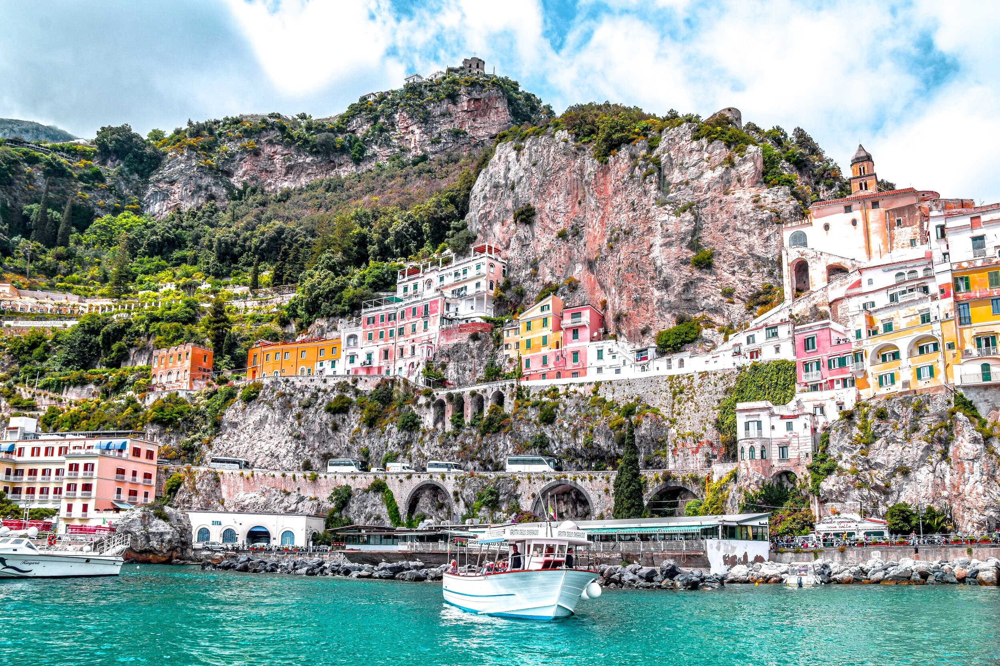
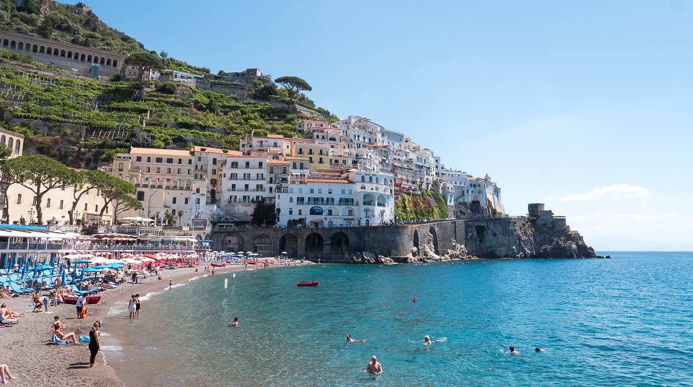

The Amalfi Coast is a 50-kilometer stretch of coastline along the southern edge of Italy’s Sorrentine Peninsula, in the Campania region. It’s a popular holiday destination, with sheer cliffs and a rugged shoreline dotted with small beaches and pastel-colored fishing villages. The coastal road between the port city of Salerno and clifftop Sorrento winds past grand villas, terraced vineyards, and cliffside lemon groves.
 